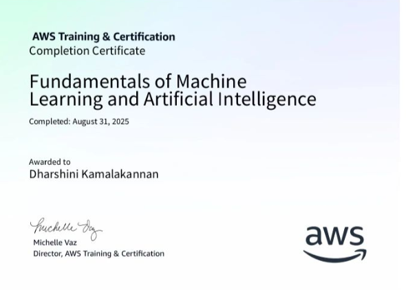
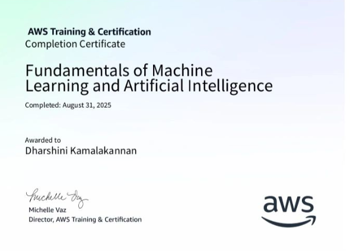

Internship
Arul Technology
As a AI&ML Intern

DVein Innovation
As a Data Science Intern


I am a motivated and detail-oriented professional with a strong foundation in Python programming, data analysis, and data visualization, supported by hands-on industry experience. I have practical exposure to working with real-world datasets, enabling me to derive insights through effective data cleaning, exploratory data analysis, and dashboard creation. My technical skill set includes Python, SQL, Power BI, Excel, and cloud fundamentals such as Azure AI. I have experience applying analytical techniques and basic machine learning workflows to solve data-driven problems and support informed decision-making.
As a AI&ML Intern
As a Data Science Intern
Developed an Indian Sign Language (ISL) detection system to recognize hand gestures and translate them into text. The system uses computer vision and deep learning techniques to process real-time video input. This project aims to bridge the communication gap between hearing-impaired individuals and others by enabling gesture-based interaction.
Technologies Used: Python, OpenCV, TensorFlow, CNN, NumPy,NLP.
Developed a real-time speech-based AI system designed to assist users with interview preparation and learning. The system captures spoken input, converts speech to text, analyzes responses using AI and NLP techniques, and provides intelligent feedback in real time. It acts as a virtual interview coach and tutor by asking questions, evaluating answers, and offering improvements to enhance communication and technical skills.
Technologies Used:Python, Speech Recognition, NLP, Machine Learning, Text-to-Speech (TTS), Flask
Designed an interactive Power BI dashboard to analyze sales performance and business trends. Performed data cleaning, transformation, and modeling to create meaningful visualizations. The dashboard helps stakeholders make data-driven decisions by providing insights into revenue, regional performance, and product trends.
Technologies Used: Power BI, DAX, SQL, Excel, Data Visualization

 
